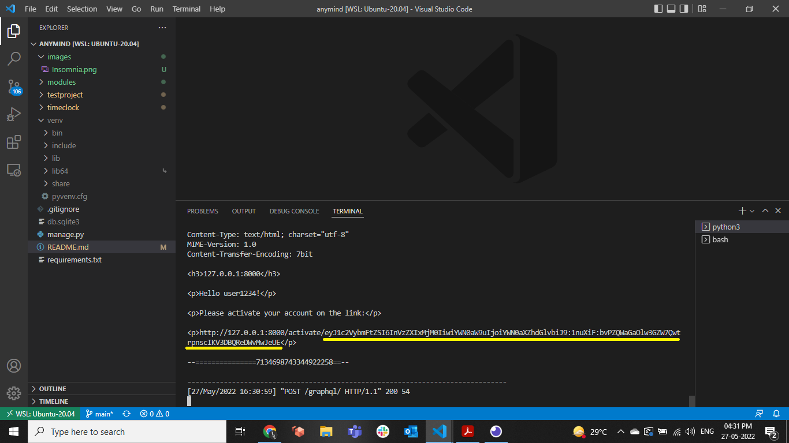
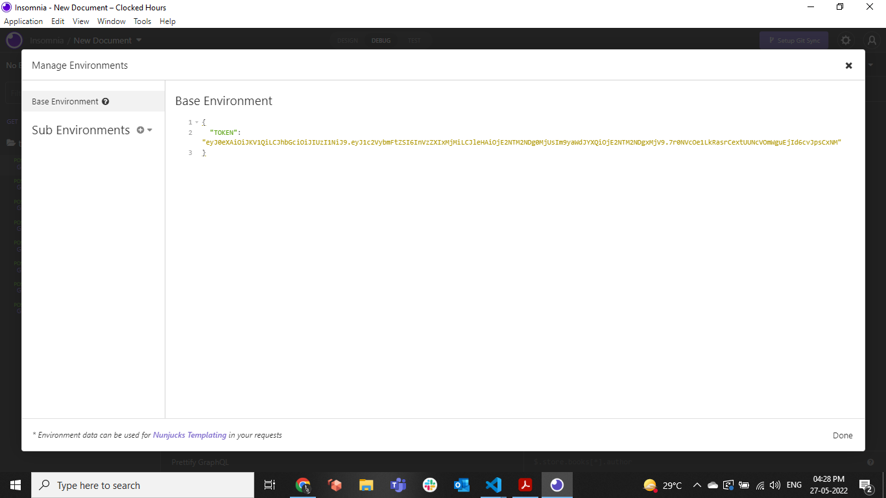
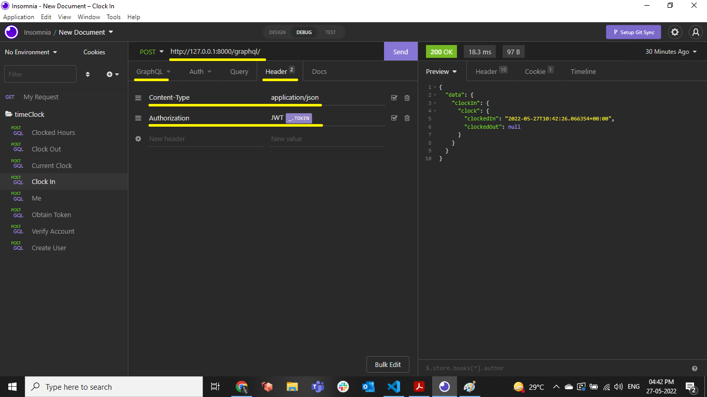
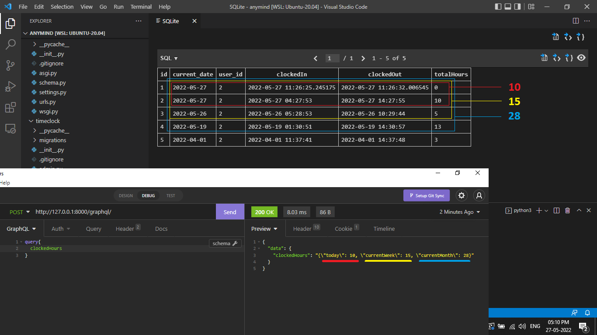
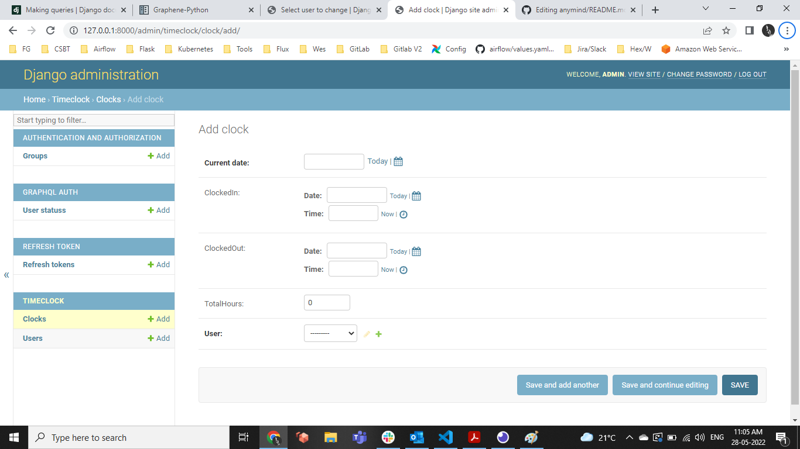

This Project is a demonstration of Using GraphQL with Django for the Time Clocking of Users. A User can Clock In/Out, check total clocked Hours in the current Day/Week/Month. All activites require a user to be authenticated using JWT.
Setup
1a. Install Insomnia Client using https://insomnia.rest/
We will use it to make queries to our GraphQL endpoint.
1b. Open up a Terminal and follow the commands
git clone https://github.com/caxefaizan/anymind.git
cd anymind
python3 -m venv venv
source venv/bin/activate
pip install -r requirements.txt
Make Django 4.x changes for JWT
PYTHON_VERSION="$(python --version | cut -d " " -f 2 | cut -d "." -f 1-2)"
sudo rm -r $(pwd)/venv/lib/python$PYTHON_VERSION/site-packages/graphql_jwt -f
cp modules/graphql_jwt $(pwd)/venv/lib/python$PYTHON_VERSION/site-packages/ -r
Setup Database
python3 manage.py makemigrations timeclock
python3 manage.py makemigrations
python3 manage.py migrate
python3 manage.py createsuperuser
Start Server
python3 manage.py runserver
Access API at http://127.0.0.1:8000/graphql/
Create Account
mutation{
createUser(
username: "user123"
email: "user123@user.com"
password1: "!@#qwe!@#qwe"
password2: "!@#qwe!@#qwe"
){
success
errors
}
}
Copy the Activation Token as displayed on the terminal. This is to verify a User Account.

Activate account
Use your previously copied Activation Token from http://127.0.0.1:8000/activate/YOUR_TOKEN in the Query
mutation{
verifyAccount(
token:"YOUR_TOKEN"
){
success
errors
}
}
Obtain JWT Token
mutation{
obtainToken(username:"user123",
password:"!@#qwe!@#qwe"){
token
}
}
Copy the JWT Token in the Response. we will use it for the following query authentication.
Use Insomnia API CLient to test the API
- In your environment, add your token to use as variable
_.TOKENin the following queries
{
"TOKEN": "YOUR_JWT_TOKEN"
}

- Create the following queries by setting body as
GraphQL Query - In the Header, set
Content-Type:application/jsonAuthorization:JWT _.TOKEN

Me
query{
me{
username
email
}
}
ClockIn
mutation{
clockIn{
clock{
clockedIn
clockedOut
}
}
}
CurrentClock
query{
currentClock{
clockedIn
clockedOut
}
}
ClockOut
mutation{
clockOut{
clock{
clockedIn
clockedOut
}
}
}
ClockedHours
query{
clockedHours
}

Django Admin
You can also add Data for testing using the Django admin.
Go to http://127.0.0.1:8000/admin/ and login using your superuser credentials
